.png) 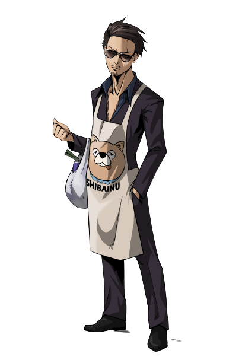
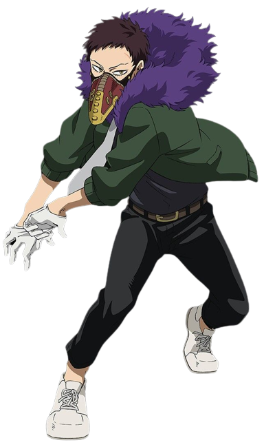
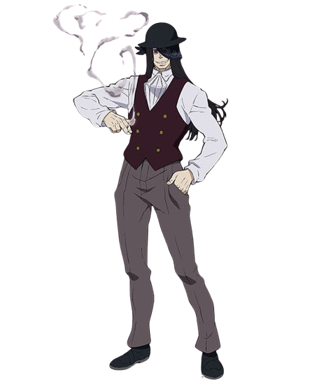
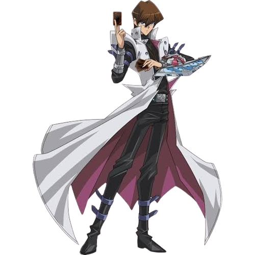
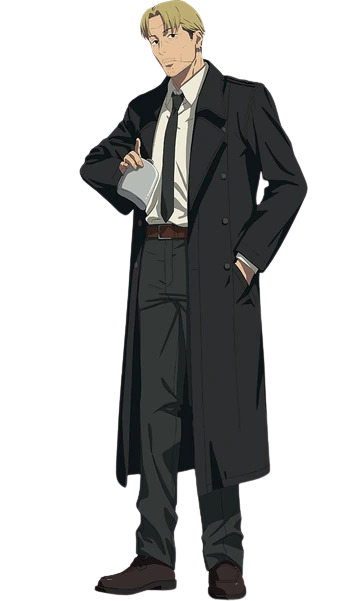
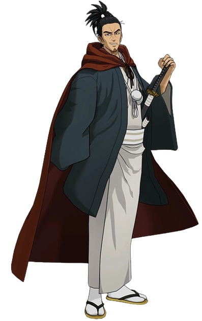
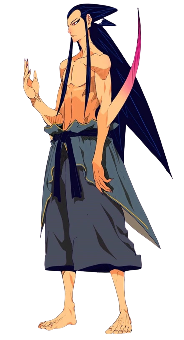
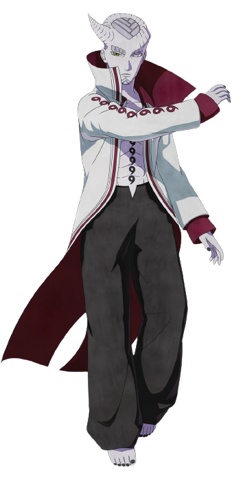
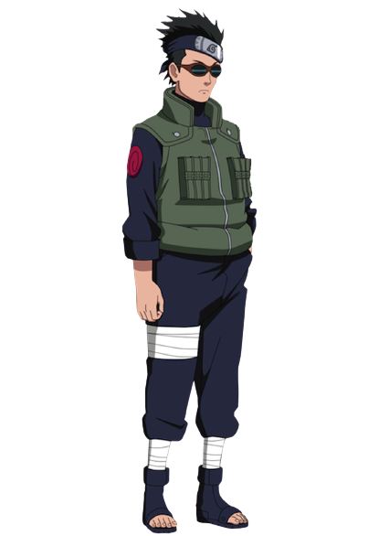
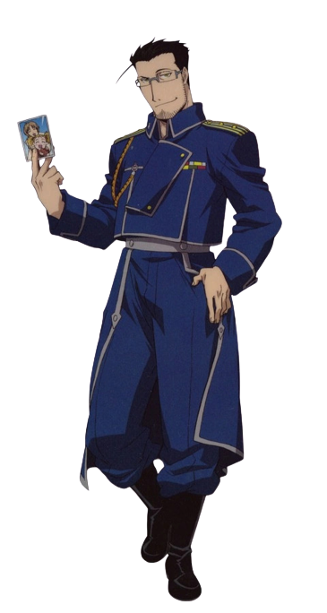
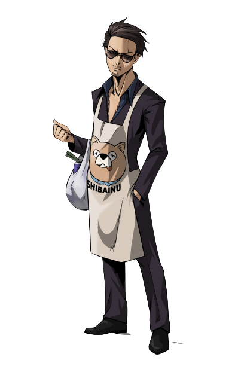
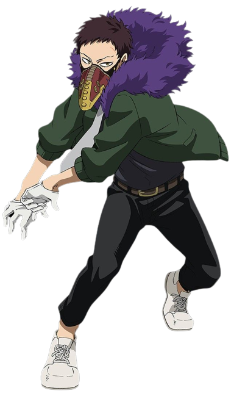
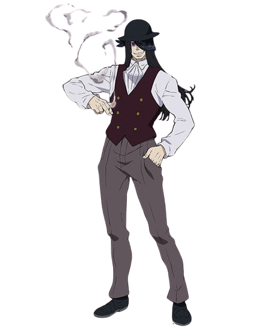
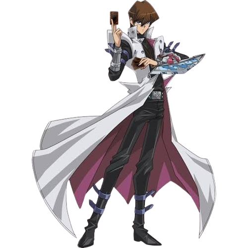
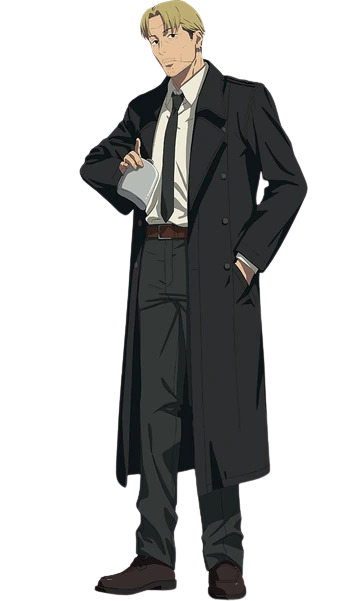
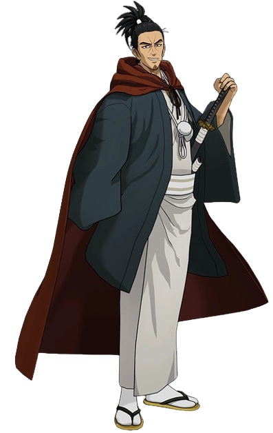
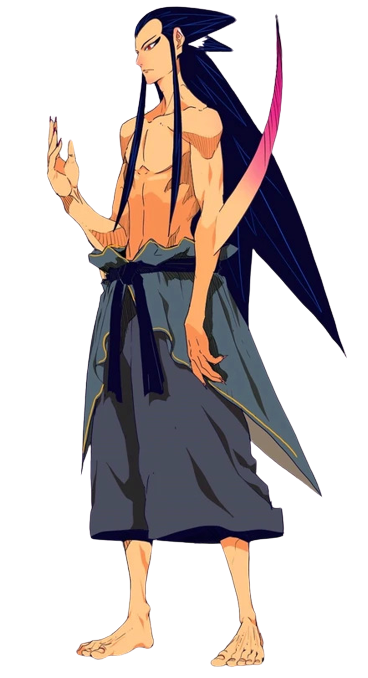
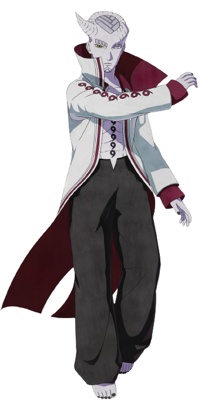
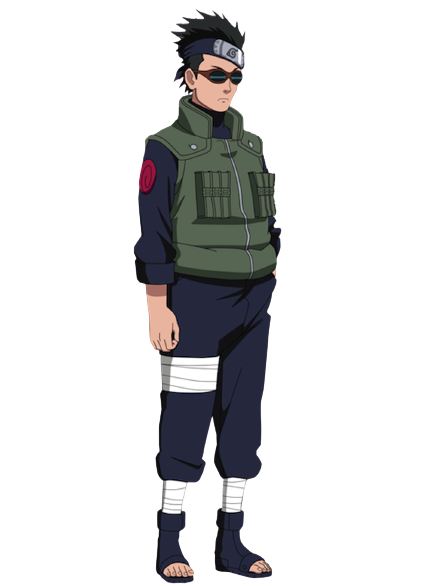
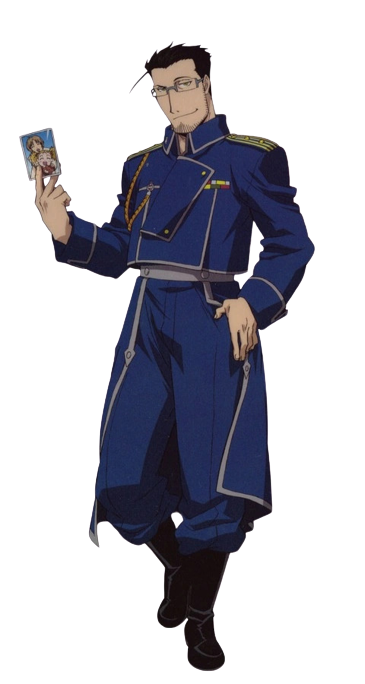
Kenjiro Tsuda
Date Of Birth: Jun 11,1971
Birth Place: Osaka, Japan
Voice Over Language: Japanese
Trending: 2nd This Week Kenjiro Tsuda is a Japanese voice actor
known for voicing Kento Nanami,
Seto Kaiba, and Overhaul / Kai Chisaki.
Kenjiro Tsuda (津田 健次郎, Tsuda Kenjirō, born June 11, 1971) is a
Japanese actor, voice actor, and film director.
His talent agency is ANDSTIR.
Tsuda lived in Jakarta until he was seven years old. He is a graduate of
Meiji University,
where he studied theater literature in the department of literature;
originally, he had considered wanting to make films
as a movie
director, when he also had an interest in the field of performing At the
En • Theater Research Institute
, he took and passed a non-degree
course, being enthusiastic about theater work.
After his graduation from a trading school, Tsuda had belonged to a
theatre group office. In so doing, there was talk of auditions,
and Tsuda made his debut in voice acting as Atsushi Noda in the 1995
animated television series "H2." Since then, Tsuda's work has
centered around voice acting, as he's worked in theater, television
dramas, and movie appearances,
among others; furthermore, he has been active at many levels, including as
a narrator and radio personality,
in television programs, commercials, and the like.
Tsuda likes both filming and watching movies. He began attending movie
theaters in junior high; though he had watched old Western movies
until senior high and focused on artistic films after entering college,
fundamentally his interest lies, evidently, in non-genres.In 2017,
when Keiji Fujiwara was recovering from illness, Tsuda took charge
as a substitute actor for a few roles (those of Isami Enomoto in "Space
Battleship Yamato 2202:Warriors of Love," Hannes in "Attack on Titan").
- Japanese Voice Actor -
MOST RECOGNIZED VOICES
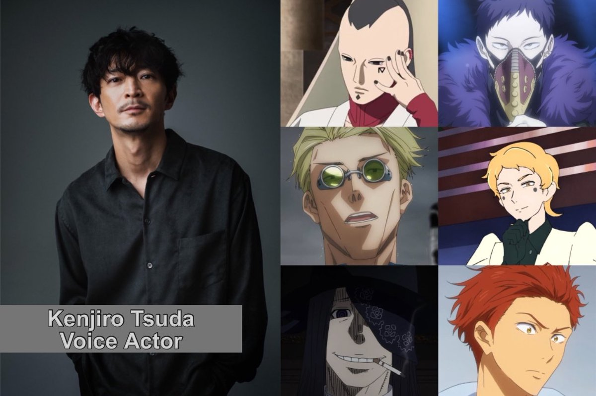
Jujutsu Kaisen follows the students of a sorcery school that fight the
terrifying demons that
haunt humanity. One of the most unassuming
but terrifyingly powerful characters in the
anime is Nanami, a
mature and sharp-witted sorcerer. Nanami left school to become a
businessman, having lost respect
for the jujutsu sorcery profession. He returned four years
later but retains some of his businessman traits, such as punctuality and
a tough,no-nonsense exterior.
Nanami's maturity is complemented by his irritation at Itadori's antics,
often treating Itadori
as a child, since Nanami doesn't want him to
end up jaded by sorcery like he was.
Tatsu – The Way Of The House Husband
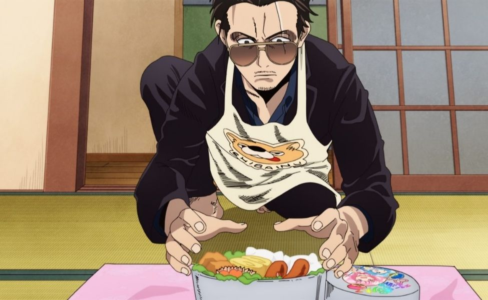
This brilliant comedy anime follows Tatsu, an ex-yakuza leader who settles
down with his wife
and decides to become a househusband. Previously
known as The Immortal Dragon, Tatsu
brings his severity and passion
to everything he does, including cleaning the house,
making lunch
for his wife, and attending yoga classes with the other housewives.
Overhaul (Kai Chisaki) – My Hero Academia
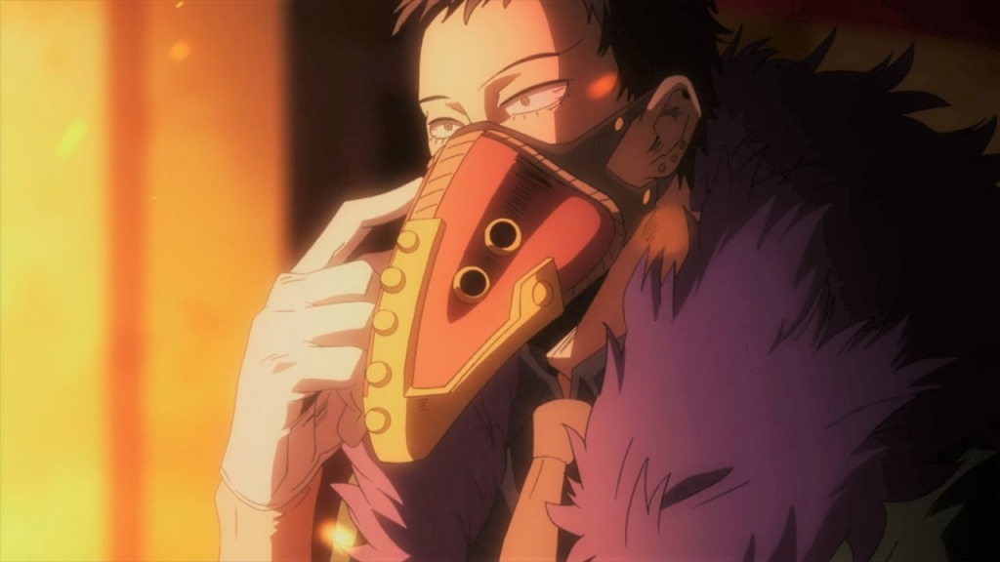
My Hero Academia is set in a world where most people have a Quirk
(superpower). Some
Quirks are better than others, and some people take a darker route than
trying to become a
hero. An extremely powerful and intimidating
villain with one of the strongest Quirks in the
show, Overhaul is a
yakuza captain and extremely deadly, using a small child, Eri,
to manufacture Quirk-erasing drugs.
Overhaul is a strategist and, at first, is level-headed, but grows more
frantic as his villain arc reaches its
end. He abuses the child and manipulates her into compliance, but when
faced
with stronger opposition, Overhaul resorts to fusing with another villain
and becoming an
outright monster.
Fire Force follows several groups of firefighters who combat the sudden
epidemic of spontaneous
human combustion. Humans burst into flames
and are turned into Infernals, which the firefighters must literally fight
to extinguish. Joker is neither a hero nor a villain, instead,
providing information to those
who request it, as long as it serves
his own needs.
Jegal Taek - The God Of High School
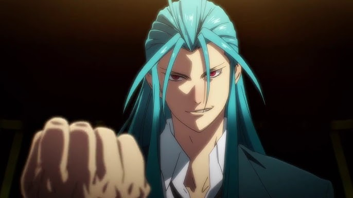
The God of High School is the epitome of the meme, "Well, that escalated
quickly," going from a fun tournament
between teens to a literal fight against God. Jegal Taek is one of the top
three fighters in the series, with an
extremely violent and aggravating temperament, often picking fights with
those on his own team.
Jegal mostly fights with his Charyeok,
a Megaladon shark that he can
summon to kill his enemies, but his endurance, strength, stamina, and
speed are not to be
trifled with. Tsuda is a perfect choice for this
character, as his growling, intimidating voice conveys Jegal's villainous
intentions.
- OTHER ROLES -
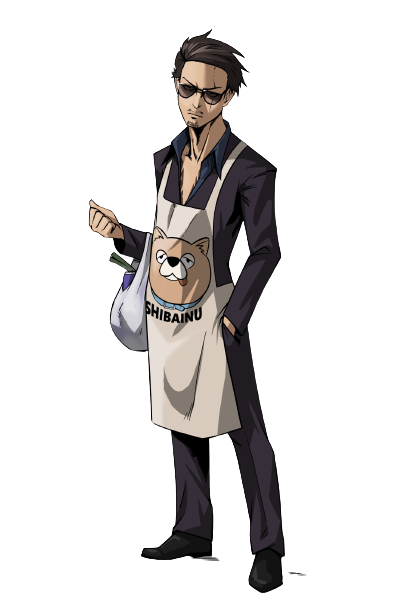
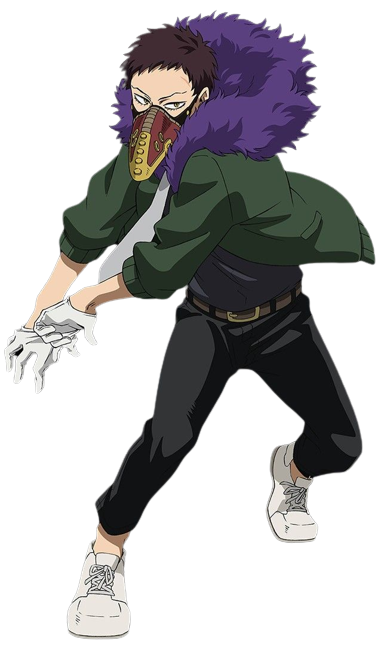
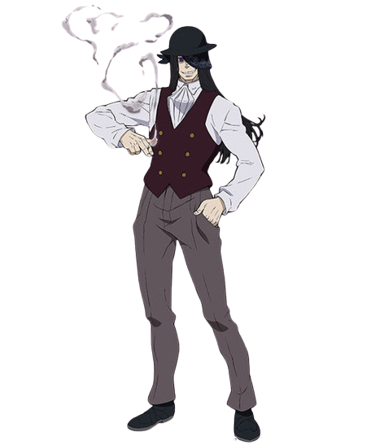
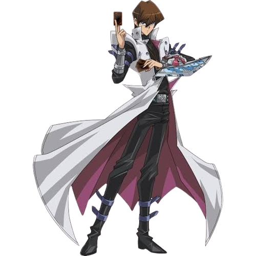
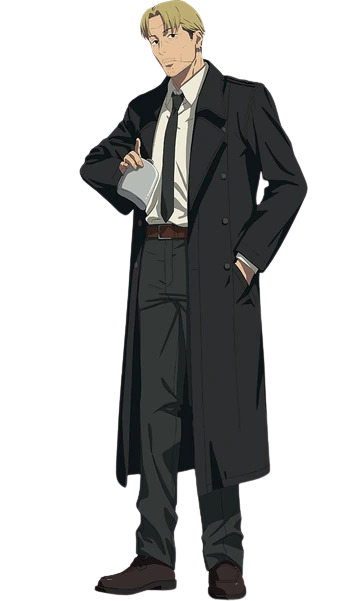
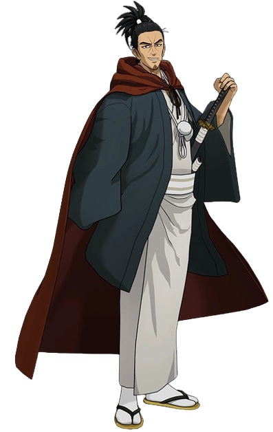
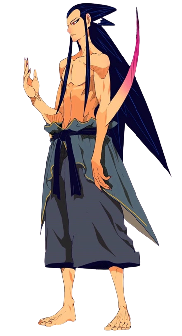
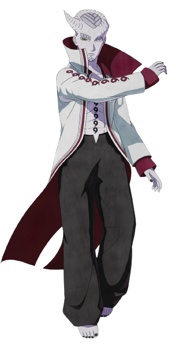
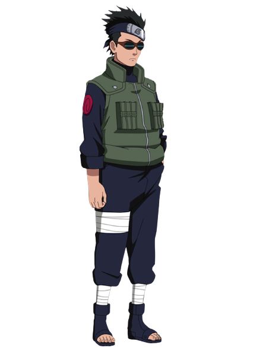
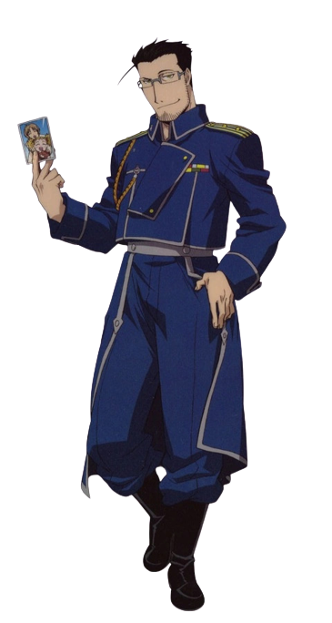